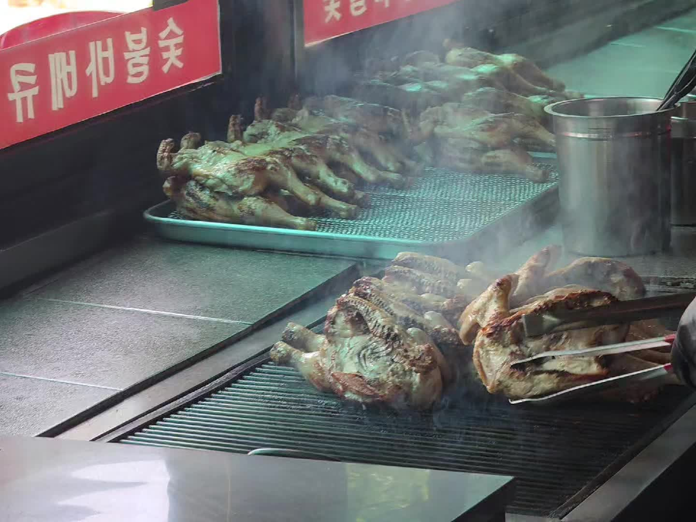

|
🍗 숯불향에 반했다 |
— 만수동 '다오숯불닭바베큐치킨' 솔직 후기

|
🔥 동네에서 만난 진짜 숯불 치킨 |


프랜차이즈 치킨이 넘쳐나는 시대에, 가끔은 "옛날 그 맛"이 그리울 때가 있다. 바삭한 튀김옷에 숯불의 불맛까지 입힌, 추억 속 시장통닭 같은 그런 치킨 말이다. 인천 남동구 만수동에서 그런 곳을 찾았다. 바로 「다오숯불닭바베큐치킨」 만수동점이다.
결론부터 말하면, 겁나 맛있었다. 특히 이 집의 양념 숯불바베큐는 한 입 먹는 순간 "아, 여기다" 싶었다. 오늘은 이 숨은 동네 맛집을, 어떤 점이 좋았고 누구에게 추천할 만한지 솔직하게 풀어본다.
※ 이 글은 직접 방문한 경험을 바탕으로 쓴 솔직 후기다. 정확한 가격·영업시간·휴무일·예약 가능 여부 등은 변동될 수 있으니, 방문 전 네이버 플레이스 등에서 최신 정보를 확인하길 권한다.
|
📍 다오숯불닭바베큐치킨은 어떤 곳 |


「다오숯불닭바베큐치킨」은 인천 남동구 만수동에 자리한 치킨 전문점이다. 이름 그대로 "숯불"과 "바베큐"를 내세운 곳으로, 가장 큰 특징은 후라이드 치킨과 숯불 치킨을 한 곳에서 모두 즐길 수 있다는 점이다.
이 집의 매력은 단순히 "치킨집"이 아니라 "옛날 시장통닭의 추억"을 떠올리게 하는 감성에 있다. 얇고 부드러운 튀김옷의 고소한 맛, 달콤짭짤한 양념 숯불바베큐, 그리고 옛스러운 인테리어와 호프집 같은 정겨운 분위기까지.
화려하진 않아도 "동네 주민들이 아는 숨은 맛집"으로 사랑받는 곳이다. 번쩍이는 프랜차이즈 매장에 지친 사람이라면, 오히려 이런 정겨운 공간이 더 반갑게 느껴질 것이다.
|
🍗 시그니처 — 양념 숯불바베큐 |


이번에 먹어본 건 이 집의 시그니처라 할 수 있는 양념 숯불바베큐다. 그리고 이게 정말 "물건"이었다. 한 입 베어 무는 순간 입안 가득 퍼지는 숯불 특유의 불맛(스모키한 풍미)이, 일반 양념치킨과는 차원이 다른 깊이를 만들어낸다.
양념은 달콤하면서도 짭짤한 밸런스가 좋아 자극적이지 않고 계속 손이 간다. 거기에 숯불에 구워낸 닭 특유의 쫄깃하면서도 촉촉한 육즙이 더해지니, "양념치킨인데 느끼하지 않고 자꾸 당기는" 묘한 중독성이 생긴다. 숯불향과 양념, 육즙 이 세 박자가 완벽하게 어우러진 한 접시였다. "겁나 맛있다"는 말이 절로 나온 이유다.
|
숯불향에 양념이 입혀지고, 그 안에 육즙이 살아있다 — 이게 진짜 바베큐 치킨이지. |
|
✨ 바베큐와 육즙 — 식감의 디테일 |


맛만큼이나 인상적이었던 게 식감이다. 이 집 튀김의 특징은 바베큐의 훈연 숯으로 구워진 구이이다. 닭 본연의 맛이 훈연에 입혀져 "쫘르륵" 소리가 경쾌하다. 덕분에 느끼함도 덜하고 촉촉한 속살이 맛있다.
그리고 그 안의 육즙이다. 숯불에 구워내면 자칫 퍽퍽해지기 쉬운데, 이 집은 겉은 향긋하게 익으면서도 속은 촉촉한 육즙이 살아있는 절묘한 균형을 잡았다. "겉바속촉"이라는 표현이 딱 맞는 식감이라, 먹는 내내 만족스러웠다.


|
🏮 레트로 감성 — 동네 맛집의 정취 |
맛 외에 빼놓을 수 없는 게 "분위기"다. 이 집은 요즘 유행하는 깔끔하고 모던한 인테리어와는 거리가 있다. 대신 옛스러운 인테리어와 정겨운 옛 호프집 감성이 가득하다. 그리고 그게 오히려 이 집의 매력이다.


화려한 곳에서는 느낄 수 없는 "동네 단골집" 특유의 편안함과 정취가 있어, 치킨에 맥주 한잔 기울이기 딱 좋은 분위기다. "레트로 감성"이 트렌드인 요즘, 이런 진짜배기 옛 감성은 일부러 흉내 낸 것과는 다른 진정성이 있다. 맛도 분위기도 "추억"을 자극하는, 그런 따뜻한 공간이었다.
|
💰 양과 가성비 |

실속도 빼놓을 수 없다. 이 집은 양과 가성비 면에서도 만족스러웠다. 숯불에 정성껏 구워내는 "수제" 느낌의 치킨임에도, 부담스럽지 않게 즐길 수 있는 점이 좋았다.
프랜차이즈 치킨 가격이 부쩍 오른 요즘, "이 정도 퀄리티와 양에 이 가격이면" 싶은 만족감이 있었다. 푸짐하게 즐기고 나니 "잘 먹었다"는 기분이 절로 들었다. 맛·양·가격의 균형이 좋은, 가성비 좋은 동네 치킨집이라 할 만하다.
|
💡 다오숯불닭바베큐치킨 만수동점 — 한눈에 보기 · 종류 — 후라이드 + 숯불 바베큐 치킨 전문 · 추천 메뉴 — 양념 숯불바베큐 (이번 방문 강력 추천!) · 특징 — 얇고 바삭한 튀김옷, 스모키한 숯불향, 촉촉한 육즙 · 분위기 — 레트로한 옛 호프집 감성, 동네 단골집 · 위치 — 인천 남동구 만수동 (916-8 인근) ⚠️ 정확한 가격·영업시간·휴무·예약은 네이버 플레이스 등 공식 확인 권장 |
|
⚠️ 솔직한 참고 포인트 |


솔직한 후기인 만큼, 방문 전 참고하면 좋을 점도 짚어둔다. 먼저 이 집은 "모던하고 트렌디한" 공간을 기대하면 안 된다. 앞서 말했듯 "옛 감성"이 매력인 곳이라, 깔끔하고 세련된 분위기를 원하는 사람에게는 호불호가 있을 수 있다. (물론 그 정겨움을 좋아하는 사람에겐 최고의 장점이다.)
또한 숯불에 직접 구워내는 방식 특성상, 주문 후 조리에 시간이 걸릴 수 있다. 바쁜 시간대라면 여유를 두고 방문하거나 미리 포장 주문을 고려하는 게 좋겠다. 정확한 영업시간이나 휴무일, 배달 가능 여부 등은 매번 바뀔 수 있으니 방문 전 네이버 플레이스나 전화로 확인하는 걸 추천한다. (이 글의 정보는 방문 시점 기준이다.)

▶ 다오숯불바베큐치킨 — 네이버 원문에서 재생|
🌶️ 총평 — 이런 분께 강력 추천 |


「다오숯불닭바베큐치킨」 만수동점을 한 줄로 정리하면 "숯불향에 반하는, 추억의 동네 바베큐 치킨"이다. 얇고 바삭한 튀김, 스모키한 숯불향, 촉촉한 육즙, 달콤짭짤한 양념, 그리고 정겨운 분위기까지 — "치킨에 진심인" 동네 맛집의 정석을 보여준다.

|
🍗 이런 분께 추천합니다 · '숯불향 가득한' 바베큐 치킨을 좋아하는 분 · 프랜차이즈와는 다른, 옛날 시장통닭 감성을 그리워하는 분 · 만수동 근처에서 가성비 좋은 치킨집을 찾는 분 · 치킨에 맥주 한잔, 정겨운 분위기에서 즐기고 싶은 분 △ 모던하고 세련된 인테리어를 기대한다면 참고 필요 |
개인적으로는 재방문 의향 "무조건"이다. 특히 양념 숯불바베큐는 만수동에 갈 일이 있다면 다시 찾을 만한 맛이었다. 숯불향 가득한 진짜 바베큐 치킨이 당긴다면, 만수동 다오숯불닭바베큐치킨, 자신 있게 추천한다.
|
화려하지 않아도, 진짜는 맛으로 말한다 — 숯불향에 반한 동네 치킨집. |
|
📍 방문 정보 |
|
🍗 다오숯불닭바베큐치킨 (만수동점) · 위치 — 인천광역시 남동구 만수동 916-8 인근 · 종류 — 후라이드 / 숯불 바베큐 치킨 전문 · 추천 — 양념 숯불바베큐 ⚠️ 영업시간·휴무·가격·예약·배달은 네이버 플레이스 등에서 최신 정보 확인 |
#다오숯불닭바베큐치킨 #만수동치킨 #인천치킨맛집 #남동구맛집 #숯불바베큐치킨 #만수동맛집 #숯불치킨 #동네맛집 #양념치킨 #치킨추천